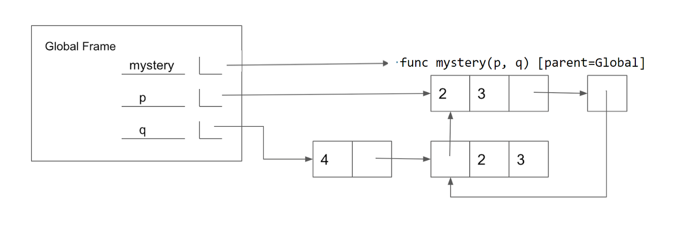
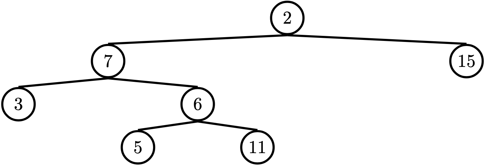

Discussion 5: Python Lists, Trees, Mutability
Lists
A sequence is an ordered collection of values. It has two fundamental properties: length and element selection. In this discussion, we'll explore one of Python's data types, the list, which implements this abstraction.
In Python, we can have lists of whatever values we want, be it numbers, strings, functions, or even other lists! Furthermore, the types of the list's contents need not be the same. In other words, the list need not be homogenous.
Lists can be created using square braces. Their elements can be
accessed (or indexed) with square braces. Lists are
zero-indexed: to access the first element, we must index at 0; to access
the ith element, we must index at i - 1.
We can also index with negative numbers. These begin indexing at the
end of the list, so the index -1 is equivalent to the index
len(list) - 1 and index -2 is the same as len(list) - 2.
Let’s try out some indexing:
>>> fantasy_team = ['aaron rodgers', 'desean jackson']
>>> print(fantasy_team)
['aaron rodgers', 'desean jackson']
>>> fantasy_team[0]
'aaron rodgers'
>>> fantasy_team[len(fantasy_team) - 1]
'desean jackson'
>>> fantasy_team[-1]
'desean jackson'List slicing
If we want to access more than one element of a list at a time, we can use a slice. Slicing a sequence is very similar to indexing. We specify a starting index and an ending index, separated by a colon. Python creates a new list with the elements from the starting index up to (but not including) the ending index.
We can also specify a step size, which tells Python how to collect values for us. For example, if we set step size to 2, the returned list will include every other value, from the starting index until the ending index. A negative step size indicates that we are stepping backwards through a list when collecting values.
You can also choose not to specify any/all of the slice arguments. Python will perform some default behaviour if this is the case:
- If the step size is left out, the default step size is 1.
- If the start index is left out, the default start index is the beginning of the list.
- If the end index is left out, the default end index is the end of the list.
- If the step size is negative, the default start index becomes the end of the list, and the default end index becomes the beginning of the list.
Thus, lst[:] creates a list that is identical to lst (a copy
of lst). lst[::-1] creates a list that has the same elements
of lst, but reversed. Those rules still apply if more than just the
step size is specified e.g. lst[3::-1].
>>> directors = ['jenkins', 'spielberg', 'bigelow', 'kubrick']
>>> directors[:2]
['jenkins', 'spielberg']
>>> directors[1:3]
['spielberg', 'bigelow']
>>> directors[1:]
['spielberg', 'bigelow', 'kubrick']
>>> directors[0:4:2]
['jenkins', 'bigelow']
>>> directors[::-1]
['kubrick', 'bigelow', 'spielberg', 'jenkins']List comprehensions
A list comprehension is a compact way to create a list whose elements are the results of applying a fixed expression to elements in another sequence.
[<map exp> for <name> in <iter exp> if <filter exp>]It might be helpful to note that we can rewrite a list comprehension as an equivalent for statement. See the example to the right.
Let's break down an example:
[x * x - 3 for x in [1, 2, 3, 4, 5] if x % 2 == 1]In this list comprehension, we are creating a new list after performing a
series of operations to our initial sequence [1, 2, 3, 4, 5]. We only
keep the elements that satisfy the filter expression x \% 2 == 1
(1, 3, and 5). For each retained element, we apply
the map expression x*x - 3 before adding it to the new list that we are
creating, resulting in the output [-2, 6, 22].
Note: The
ifclause in a list comprehension is optional.
Questions
Q1: Closest Number
Write a function that takes in a list of numbers nums and a target number target and returns the number in nums that is the closest to target. If there's a tie, return the number that shows up earlier in the list. You should do this in one line.
Hint: To find how close two numbers are, you can use abs(x - y)
Hint 2: Use the min function and pass in a key function.
Q2: (Tutorial) Max Product
Write a function that takes in a list and returns the maximum product that can be formed using nonconsecutive elements of the list. The input list will contain only numbers greater than or equal to 1.
Run in 61A CodeMutability
Let's imagine you order a mushroom and cheese pizza from La Val's, and that they represent your order as a list:
>>> pizza = ['cheese', 'mushrooms']A couple minutes later, you realize that you really want onions on the pizza. Based on what we know so far, La Val's would have to build an entirely new list to add onions:
>>> pizza = ['cheese', mushrooms']
>>> new_pizza = pizza + ['onions'] # creates a new python list
>>> new_pizza
['cheese', mushrooms', 'onions']
>>> pizza # the original list is unmodified
['cheese', 'mushrooms']This is silly, considering that all La Val's had to do was add onions on top of
pizza instead of making an entirely new pizza.
We can fix this issue with list mutation. In Python, some objects, such as lists and dictionaries, are mutable, meaning that their contents or state can be changed over the course of program execution. Other objects, such as numeric types, tuples, and strings, are immutable, meaning they cannot be changed once they are created.
Therefore, instead of building a new pizza, we can just mutate pizza
to add some onions!
>>> pizza.append('onions')
>>> pizza
['cheese', 'mushrooms', 'onions']append is what's known as a method, or a function that belongs to an
object, so we have to call it using dot notation. We'll talk more about methods
later in the course, but for now, here's a list of useful list mutation methods:
append(el): Addselto the end of the list, and returnsNoneextend(lst): Extends the list by concatenating it withlst, and returnsNoneinsert(i, el): Insertelat indexi(does not replaceelement but adds a new one), and returnsNoneremove(el): Removes the first occurrence ofelin list, otherwise errors, and returnsNonepop(i): Removes and returns the element at indexi
We can also use the familiar indexing operator with an assignment statement to
change an existing element in a list. For example, we can change the element at index 1
and to 'tomatoes' like so:
>>> pizza[1] = 'tomatoes'
>>> pizza
['cheese', 'tomatoes', 'onions']Questions
Q3: WWPD
What would Python display? In addition to giving the output, draw the box and pointer diagrams for each list to the right.>>> s1 = [1, 2, 3]
>>> s2 = s1
>>> s1 is s2>>> s2.extend([5, 6])
>>> s1[4]>>> s1.append([-1, 0, 1])
>>> s2[5]>>> s3 = s2[:]
>>> s3.insert(3, s2.pop(3))
>>> len(s1)>>> s1[4] is s3[6]>>> s3[s2[4][1]]>>> s1[:3] is s2[:3]>>> s1[:3] == s2[:3]Q4: (Optional) Mystery Reverse Environment Diagram
Fill in the lines below so that the variables in the global frame are bound to the values below. Note that the image does not contain a full environment diagram. You may only use brackets, commas, colons, p and q in your answer.

Run in 61A CodeQ5: (Tutorial) Add This Many
Write a function that takes in a valuex, a value el, and a list s and adds as many el's to the end of the
list as there are x's. Make sure to modify the original list using list mutation techniques.
Trees
In computer science, trees are recursive data structures that are widely used in various settings. The diagram to the right is an example of a tree.
Notice that the tree branches downward. In computer science, the root of a tree starts at the top, and the leaves are at the bottom.
Some terminology regarding trees:
- Parent Node: A node that has branches. Parent nodes can have multiple branches.
- Child Node: A node that has a parent. A child node can only belong to one parent.
- Root: The top node of the tree. In our example, the node that contains 7 is the root.
- Label: The value at a node. In our example, all of the integers are values.
- Leaf: A node that has no branches. In our example, the nodes that contain -4, 0, 6, 17, and 20 are leaves.
- Branch: A subtree of the root. Note that trees have branches, which are trees themselves: this is why trees are recursive data structures.
- Depth: How far away a node is from the root. In other words, the number of edges between the root of the tree to the node. In the diagram, the node containing 19 has depth 1; the node containing 3 has depth 2. Since there are no edges between the root of the tree and itself, the depth of the root is 0.
- Height: The depth of the lowest leaf. In the diagram, the nodes containing -4, 0, 6, and 17 are all the lowest leaves, and they have depth 4. Thus, the entire tree has height 4.
In computer science, there are many different types of trees. Some vary in the number of branches each node has; others vary in the structure of the tree.
Trees Implementation
A tree has both a value for the root node and a sequence of branches, which are also trees. In our implementation, we represent the branches as a list of trees. Since a tree is an abstract data type, our choice to use lists is just an implementation detail.
- The arguments to the constructor
treeare the value for the root node and an optional list of branches. If no branches parameter is provided, the default value[]is used. - The selectors for these are
labelandbranches.
Remember branches returns a list of trees and not a tree directly. It's important to distinguish between working with a tree and working with a list of trees.
We have also provided a convenience function, is_leaf.
Let's try to create the tree below.

# Example tree construction
t = tree(1,
[tree(3,
[tree(4),
tree(5),
tree(6)]),
tree(2)])Questions
Q6: (Warmup) Height
Write a function that returns the height of a tree. Recall that the height of a tree is the length of the longest path from the root to a leaf. Run in 61A CodeQ7: Maximum Path Sum
Write a function that takes in a tree and returns the maximum sum of the values along any path in the tree. Recall that a path is from the tree's root to any leaf.
Run in 61A CodeQ8: (Tutorial) Find Path
Write a function that takes in a tree and a value x and returns a list containing the nodes along the path required to get from the root of
the tree to a node containing x.
If x is not present in the tree, return None. Assume that the entries of the tree are unique.
For the following tree, find_path(t, 5) should return [2, 7, 6, 5]

Run in 61A Code